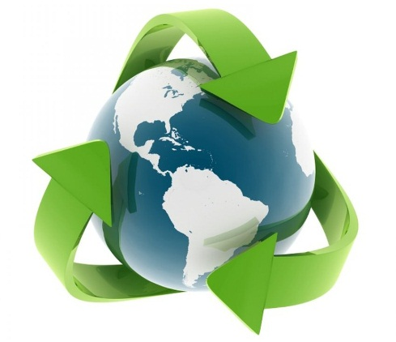

Sustentabilidade
Muitas comunidades que antes viviam sofrendo com doenças de todo tipo; provocadas por indústrias poluidoras instaladas em suas vizinhanças viram sua qualidade de vida ser gradativamente recuperada e melhorada ao longo do desenvolvimento desses projetos sustentáveis. Da mesma forma, áreas que antes eram consideradas meramente extrativistas e que estavam condenadas ao extermínio por práticas predatórias, hoje tem uma grande chance de se recuperarem após a adoção de projetos de exploração com fundamentos sólidos na sustentabilidade e na viabilidade de uma exploração não predatória dos recursos disponíveis. Da mesma forma, cuidando para que o envolvimento das comunidades viventes nessas regiões seja total e que elas ganhem algo com isso; todos ganham e cuidam para que os projetos atinjam o sucesso esperado.
Sustentabilidade Ambiental e Ecológica
Sustentabilidade ambiental e ecológica é a manutenção do meio ambiente do planeta Terra, mantendo a qualidade de vida e o ambiente em harmonia com as pessoas. A sustentabilidade ambiental ainda é cuidar para não poluir as águas, separar o lixo, evitar desastres ecológicos, como queimadas e desmatamentos. O próprio conceito de sustentabilidade é para longo prazo, trata-se de encontrar uma forma de desenvolvimento que atenda às necessidades do presente sem comprometer a capacidade das próximas gerações de suprir as próprias necessidades. O desafio da humanidade é preservar seu padrão de vida e manter o desenvolvimento tecnológico sem exaurir os recursos naturais do planeta.
Sustentabilidade Empresarial
Cada vez mais as empresas se preocupam com o meio ambiente, mas como parte de uma estratégia comercial e de marketing. Nas empresas, o conceito de sustentabilidade está ligado diretamente com responsabilidade social, tornou-se inclusive uma vantagem competitiva. Saiba mais sobre o significado de Responsabilidade social. A empresa que se preocupa com a sustentabilidade é aquela que cuida do planeta, se preocupa com a comunidade, com o meio ambiente e é sempre louvável aos olhos do público. A sustentabilidade nas empresas está também ligada à sustentabilidade econômica, que é alcançada através de um modelo de gestão sustentável, ou seja, um modo que incentiva processos que permitam a recuperação do capital financeiro, humano e natural da empresa.